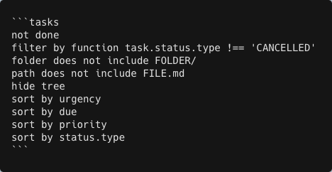
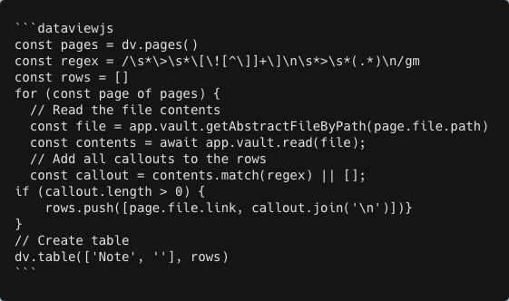

I like Obsidian
One year ago today, I defended my dissertation. Ten days later, I was deep in the Obsidian fora trying out workflows for my postdoc and beyond. This post is about my adoption and adaptation of Obsidian, how I thought I might use it, and how I came to use it over the past year. It’s one of the most flexible pieces of software I’ve ever seen, and one which no two people seem to use the same way, and as much as I’ve read about it, I never encountered someone with an identical combination of priorities. Maybe yours are pretty close and maybe you will find this post useful.
Background
Because this information is most likely to be most useful to people with similar tech experience and organizational priorities, I will tell you mine. I am pretty good at the computer. My professional experience includes freelance IT consulting[1] and a barely technical role in mobile development that I left[2] to go back to school for climate science. I’ve been using Markdown for like fifteen years. I do not hesitate to brew install and I’m free to do so on my current employer-owned computer. The administration of my own life has never been a struggle for me, I procrastinate like anyone[3] but overall I am good at managing my time, I’ve always had tidy folders, and I live at inbox zero. I do not use LLMs for anything.
What I don’t use
When I posted on Bluesky, looking for advice on integrating Quarto, Zotero, and a kanban-style task board, I was making assumptions about how I’d need Obsidian to work based on the workflows I used in grad school. By the end, I was spending most of my time looking at a couple of Quarto notebooks and a Google Sheet that I used as a kanban board. By the very end, it was a pile of Word documents and scraps of paper. I’m glad I spent some time testing out all kinds of integration, and it showed me how far Obsidian can stretch, but I still haven’t needed much of what I set up. You can, if you want, get Obsidian to act a bit like an IDE, and I set up plugins for working with Quarto and R, but it has never been practical to do this for two reasons: 1. I want my vault and data folders to exist in different places and I don’t want to deal with Obsidian and Git having to touch; and 2. It is better to work in a real IDE (I use Positron). I haven’t needed to export notes into other formats, either, though I did test this Enhancing Export plugin to be sure that I could export a note to .docx and have my citations still connected to Zotero and not break stable isotope notation (δ13C, anyone?). I was impressed that it worked. I found some kanban plugins that were okay but in the process I found I preferred a different approach, which is —
What I use
The Tasks plugin coupled with Dataview, a popular combination for lots of Obsidian use cases. Dataview is, to me, one of the things that makes Obsidian a powerful tool — I use it to corral types of information across all my notes into summaries. I have one note called “To do” that contains the following code:

I can pin this note, in Viewer mode, to my sidebar, and I can keep To do items in their respective notes with more context while having a list that includes everything I want, and nothing I don’t.
I have another summary note that collects callout text across my vault. When a note includes a big question that I want to keep in mind, I put the question in a callout, and I use this Dataview code to see them all when I get stuck or want a reminder:

0) { rows.push([page.file.link, callout. join('\n')l)} } // Create table dv.table(['Note' , ''l, rows)">I got this partly from a forum post and partly from a friend who knows regex. It was a little annoying to get here but worth it.
The other big plugins I use are Templater to generate weekly notes (where I keep short-term tasks and bits of info that often get cut-and-pasted into other notes later on) and Style Settings for UI customization.
For academic purposes, I rely on the trifecta of Zotero Integration, Pandoc, and Pandoc Reference List. All of these require setup outside of Obsidian, including installing BetterBibTex for Zotero. I’m not someone who keeps one note file per text, which is how a lot of people like to connect Zotero and Obsidian. I just like to cite papers in my notes using citation keys. As an isotope guy, Extended Markdown Syntax is also a must for me. I also use Outliner and Outline Converter for manipulating outlines.
Somewhere along my Obsidian journey, another user mentioned Hookmark, an app that has been well worth $29.99 out of my project budget. I use it to add links in Obsidian to files and emails, mostly so that tasks are associated with an immanently findable thing. It is one of those tools I wish I had known about way sooner.
Conclusion
That is the blog post, thank you for reading.
- In NYC in the late aughts it was possible to almost make a living billing rich people upwards of $100/hr to do things like sync multiple calendars on their phones for them
- In Portland, OR in the mid tens it was easy to make a comfortable living writing emails and drinking in the office and I could not keep doing it
- What do you think this is